VERBA / SHORT FORMБЫСТРО
БЫСТРО
ЗАЦЕПИТЬ.
Короткие рекламные ролики: персонажи, распаковки, взаимодействие с продуктом и мини-истории для соцсетей.
SHORT
STORIES01 / ADMIT IDEAS
STORIES01 / ADMIT IDEAS
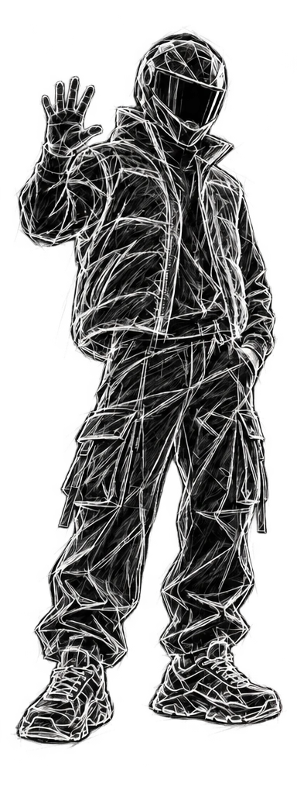
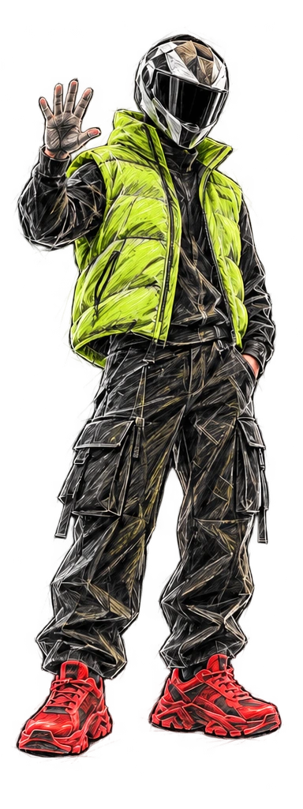
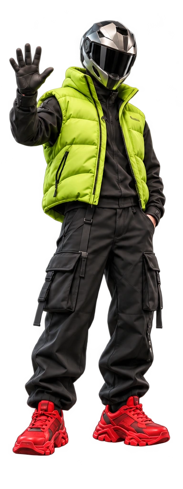
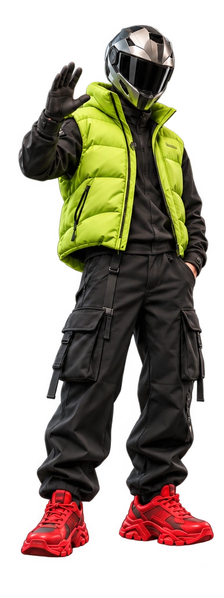
Создаю рекламу,
которую хочется досмотреть.
Сначала понимаем, кто он.
Затем даём ему силуэт, палитру и фактуру.
Перед вами — одна идея в пяти состояниях.
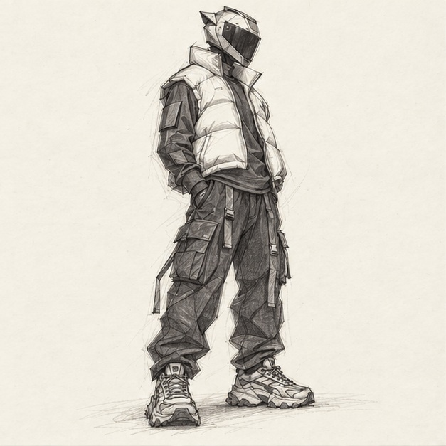
Уверенный. Быстрый. Свой в большом городе.
Всегда на шаг впереди.
Начинаем с характера и роли в истории. Наш герой — городской курьер: быстрый, уверенный, немного дерзкий. Этот характер определяет позу, силуэт, одежду и движение.
Энергия и заметность. Главный акцент.
Импульс и движение. Детали и обувь.
Контраст и технологичность. Основа.
ВЫБЕРИТЕ МАТЕРИАЛ — РАССМОТРИТЕ ДЕТАЛЬ
Сетка показывает конструкцию формы. Потяните ползунок, чтобы проявить поверх неё финальный образ с материалами и светом.
CGI-СТИЛИЗАЦИЯ / ВИЗУАЛЬНАЯ СХЕМА СЕТКИАвторская демонстрация пайплайна: сгенерированные концепты, отдельные состояния цвета, материалов и CGI-стилизации. Сетка — иллюстрация, не редактируемая 3D-модель.
Комната, образ и голос — под вашу историю.
Сравните варианты и послушайте,
как меняется подача.
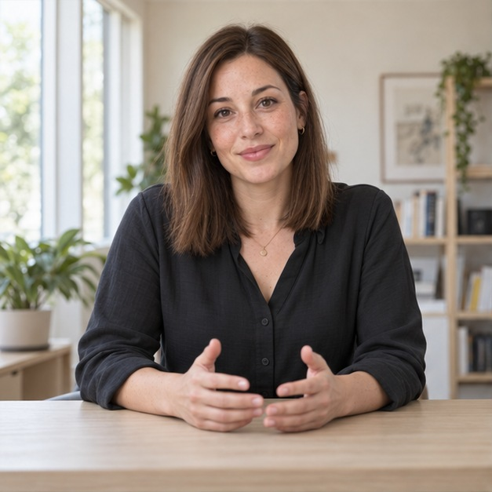
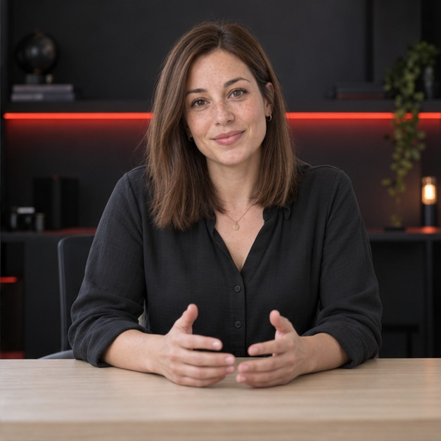
↔ DEMO FRAME / HUMAN STORIESДемонстрация на подготовленных кадрах: все герои вымышлены. Примеры голосов синтезированы; они показывают варианты тембра и подачи.
Одна задача — много способов рассказать.
С персонажем или без.
С вниманием к каждой секунде.
Короткие рекламные ролики: персонажи, распаковки, взаимодействие с продуктом и мини-истории для соцсетей.
Длинные ролики, рекламные фильмы и брендовые истории под ключ. От идеи и драматургии до финального монтажа и звука.
Свет, камера, фактуры и ритм.
Предметная реклама с кинематографичной подачей.
Семь направлений, в которых может работать AI.
Визуальные концепты показывают возможности —
это не выполненные клиентские проекты.
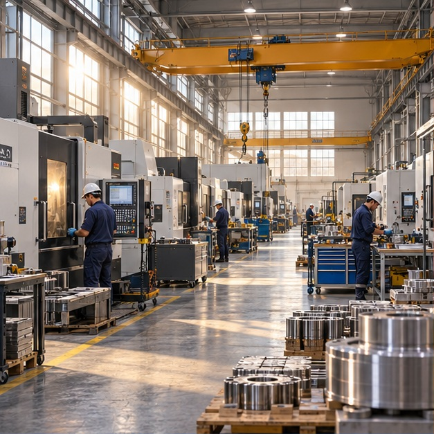
01INDUSTRIAL / BRAND FILMAI-КОНЦЕПТЗаводы и промышленность: архитектура, механизмы и движение камеры превращаются в историю о масштабе и точности.
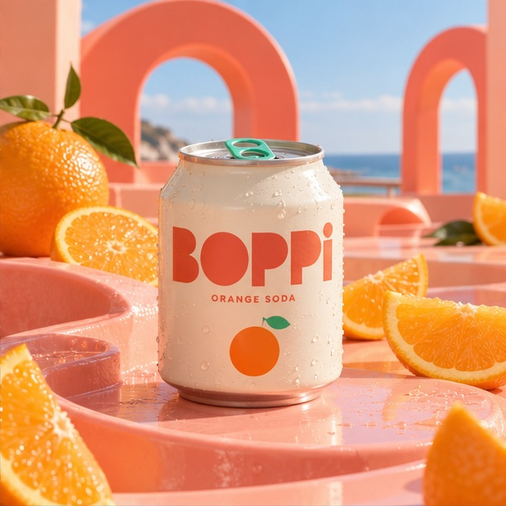
02PRODUCT / CAMPAIGNAI-КОНЦЕПТАпельсиновая газировка вымышленного бренда BOPPI: вкус, капли, выразительная упаковка и яркая игровая локация.
Прозрачный лёд зимнего Байкала, трещины, снег и низкий солнечный свет. Визуальные истории о местах и путешествиях.
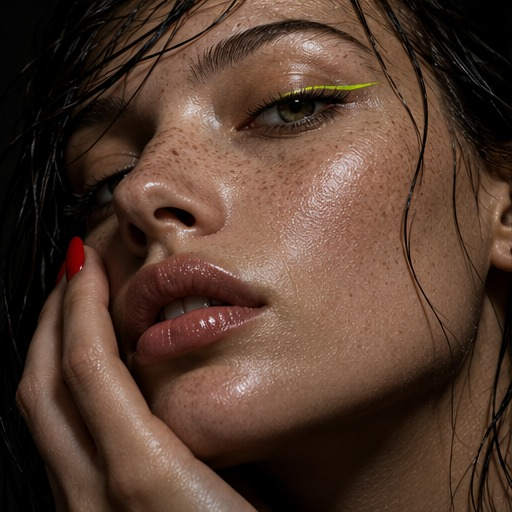
04BEAUTY / EDITORIALAI-КОНЦЕПТБьюти-визуалы с вниманием к коже, свету, оттенкам и тактильности. От выразительного портрета до продуктового кадра.
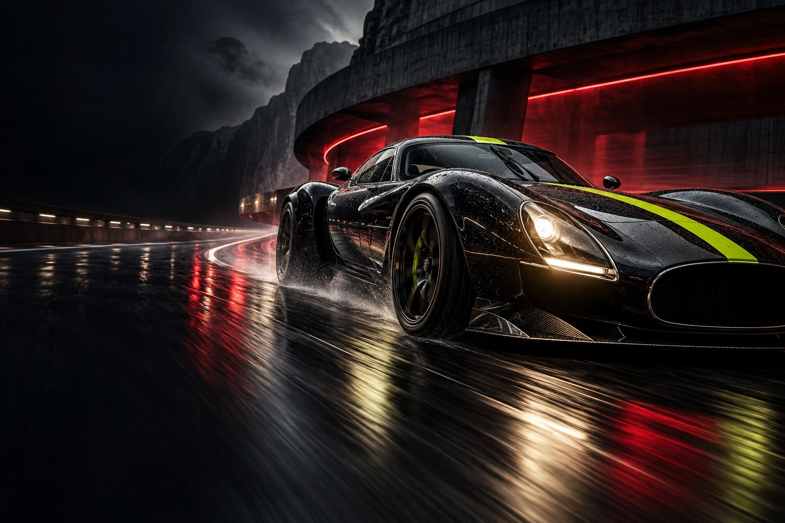
05AUTO / CINEMATICAI-КОНЦЕПТАвтомобильная реклама: пластика кузова, отражения, трасса и скорость. Кинематографичная подача с характером.
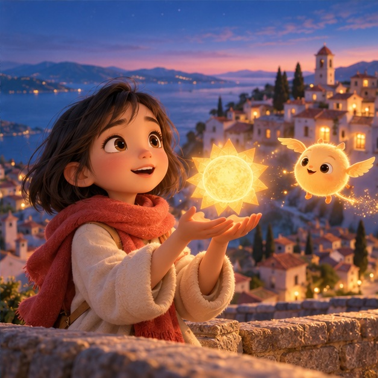
06ANIMATION / STORYTELLINGAI-КОНЦЕПТПерсонажи и мультфильмы: характер, визуальный мир, эмоции и сюжет. Короткие истории и длинные форматы под ключ.
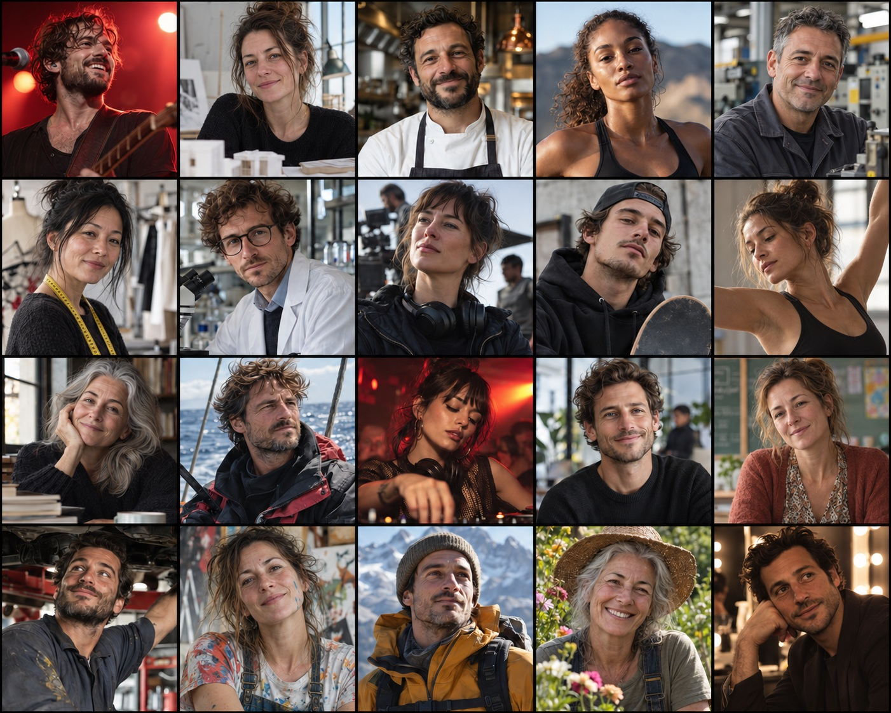
07PEOPLE / HUMAN STORIESAI-КОНЦЕПТДвадцать разных героев и настроений: музыканты, спортсмены, мастера и творческие люди. Реалистичные портреты и рекламные сцены.
Могу взять проект целиком
или подключиться на отдельный этап.
Художественные и рекламные изображения в любом стиле — от фотореализма до авторской графики.
Идея, драматургия, режиссёрское решение, сториборд и превиз до начала производства.
Оживление кадров, работа с движением и ритмом, цельная сборка коротких и длинных роликов.
Саунд-дизайн, цветокоррекция, ретушь, устранение AI-артефактов и адаптации под нужные форматы.
КАК РОЖДАЕТСЯ ИСТОРИЯ
Находим сильный рекламный ход, визуальный язык и точное настроение проекта.
Собираем драматургию, структуру ролика, тексты и режиссёрское решение.
Показываем ключевые сцены, ракурсы и монтажную логику до производства.
Генерируем и дорабатываем персонажей, локации, предметные и продуктовые кадры.
Превращаем изображения в движение, добавляем работу камеры, свет и динамику.
Собираем ритм, переходы и цельную историю под формат и задачу бренда.
Добавляем музыку, саунд-дизайн, атмосферу и при необходимости озвучку.
Финальная цветокоррекция, графика, ретушь, титры и адаптации под нужные форматы.
Результат Готовый рекламный ролик или кампания в единой визуальной системе, адаптированные под площадки бренда.
Более 5 лет соединяю режиссуру, дизайн, монтаж и возможности AI.
Работаю на стыке художественного изображения, анимации, графического дизайна, Photoshop, монтажа и режиссуры. Могу подключиться к отдельному этапу или взять проект целиком — от концепции и раскадровки до звука и финального постпродакшна.
Создаю статику в разных визуальных стилях, оживляю кадры, собираю ролики и вручную дорабатываю AI-материал: устраняю артефакты, выравниваю детали и довожу изображение до чистого коммерческого результата.
SELECTED CREDITS
Имиджевый рекламный ролик
Воссоздание семичасового фильма по книге Владимира Гиляровского · работа в команде
Рекламные ролики для бренда
Рекламные ролики для энергетического напитка
Рекламные ролики для бренда
Рекламные ролики для пива
Рекламные ролики для энергетического напитка
Рекламные ролики для кваса
Рекламные ролики для напитка
Рекламные ролики для энергетического напитка
Первый в мире полнометражный AI-мультфильм · работа в команде
Работа над анимационным проектом для платформы
Работа для Первого канала — выпуски об истории России.
Рекламная кампания для крупных дискаунтеров СНГ и Европы
Визуальный проект, посвящённый популяризации города
Проекты для технологических выставок в галереях
Короткий ролик или большой фильм.
Всё начинается с сообщения.